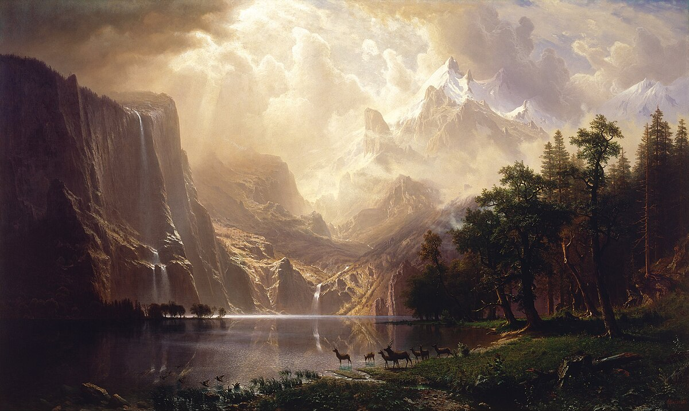

Foxes around the mountains
D'après "Among the Sierra Nevada, California", Bierstadt, 1868
"Les Ombres Errantes des Cimes"
Dans les montagnes profondes, où l’air est secret,
Une meute de renards, dans l’ombre, s’arrête.
Leurs yeux brillent d’une lueur silencieuse,
Et dans la brume, leur danse est précieuse.
Ils se glissent, invisibles, dans la lumière dorée,
Portant avec eux des histoires oubliées.
Mais quand l’aube chasse les ombres du matin,
Un murmure étrange les suit... et ils ne sont plus qu’un.
"Histoire"
Dans la majesté des montagnes de la Sierra Nevada, un instant suspendu semble prendre vie sous le pinceau d'un artiste du XIXe siècle, Albert Bierstadt.
À travers son tableau "Among the Sierra Nevada, California" (1868), il capture la beauté brute des paysages américains, où l’immensité des cieux et des cimes montagneuses crée une atmosphère à la fois imposante et sereine.
Les renards, presque invisibles, pourraient représenter des témoins silencieux de cette nature encore sauvage. Mais au-delà de la scène figée, sl’œuvre évoque un mystère, un espace où la lumière et l’ombre se rencontrent, comme une porte vers l’inconnu.